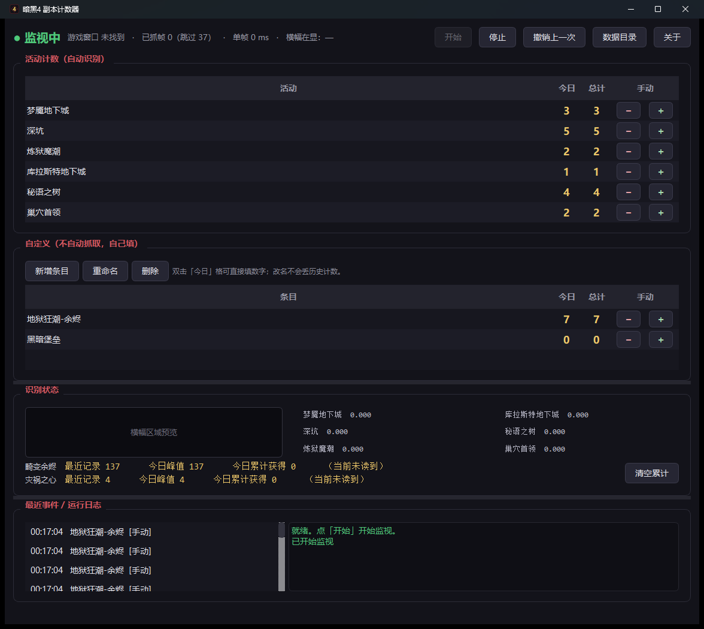

玩《暗黑破坏神IV》时自动统计各类副本和活动打了多少次，不用手动记账。

| 活动 | 怎么判断"打完了" | 方式 |
|---|---|---|
| 梦魇地下城 | 梦魇地下城完成 | 自动 |
| 深坑 | 地下城完成 | 自动 |
| 炼狱魔潮 | 波次：10/10 | 自动 |
| 库拉斯特地下城 | 区域通关 | 自动 |
| 秘语之树 | 使用此宝匣获取你的奖励。 | 自动 |
| 巢穴首领 | 目标行从 击败<首领>… 变成 打开<首领>的秘宝 | 自动 |
| 地狱狂潮 | 小地图左侧的畸变余烬 / 灾祸之心 | 读数 |
| 想记的任何东西 | 自己加条目，+1 / −1 / 直接填数字 | 手动 |
D4 没有战斗日志、没有开放 API（暴雪论坛从 2023 年至今的请求帖没有任何回应）； 唯一的结构化数据源是 Overwolf GEP，但要引入整个 Overwolf 平台。
暴雪蓝贴点名 TurboHUD4（读内存）可永久封号，判据是是否 "modify / automate / interfere"。
到 Releases 页拿 D4Tracker.exe，双击即可。无需安装 Node 或 Python。
窗口里能实时看到每类模板的匹配分数和横幅区域预览，识别不准时一眼看出问题。
打完一把它会自己记账。数据存在本机 SQLite，不上传任何东西。
游戏请使用窗口化(全屏) / 无边框窗口，关闭 HDR，字体大小保持默认。 独占全屏下抓不到画面——这是 Windows 的限制，不是工具的问题。
PrintWindow(PW_RENDERFULLCONTENT) 让游戏窗口自己渲染一份到我们的 DC，
所以游戏被别的窗口挡住也能抓到（普通的 BitBlt 在这种场景只会返回一片
纯色）。拿到画面后对固定的 UI 区域做文字掩膜 + IoU 模板匹配；
地狱狂潮那两个数字笔画太细，跳过检测模型直接送识别模型，再用滑动窗口投票压噪声。
每一类的 ROI 和阈值都是用真实游戏截图标定出来的，不是猜的，并且有
tools/validate.py（分离度）和 tools/replay.py（状态机回放）
做回归验证。
py -3.13 -m venv .venv .venv\Scripts\python.exe -m pip install -r requirements.txt .\run-counter.cmd # 主界面 .\run-sampler.cmd # 样本采集器（想加新副本类型时用）
自检：.venv\Scripts\python.exe -m d4tracker --selftest（不需要游戏、不需要样本）